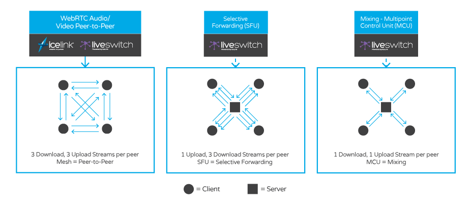

LiveSwitch – using IceLink and WebSync as engines – extends peer-to-peer audio/video transmission with server-based audio/video capabilities for applications that require selective forwarding (SFU), mixing (MCU), recording, and telephony integration. From three participants to three hundred, LiveSwitch makes WebRTC- and SIP-compatible audio/video conferencing scalable, efficient and truly cross-platform.
LiveSwitch provides unparalleled flexibility to combine P2P-, SFU-, and MCU-based media flows in a single session and switch dynamically while the session is live.
In addition to providing a full, cross-platform WebRTC stack, LiveSwitch offers a number of exclusive features that you will want in your application:
LiveSwitch gives you the power to add these features to your application with a minimum of effort.
Unlike mesh peer-to-peer networks, selective forwarding use a one-up, many-down architecture that lets participants send their media once to the server where it is distributed out to connected downstream clients. A peer-to-peer architecture requires participants to upload their media several times - once for each remote peer.
This reduction in upstream bandwidth and client load means you can scale your application out much further on the client. Because the server forwards the media packets without decoding or re-encoding them, it also keeps the server load minimal, allowing you to make the most of each instance.
LiveSwitch also functions as a multipoint control unit, or MCU, and supports mixing audio and video together into a single stream based on standard or user-defined video templates.
With just one upload stream and one download stream for each call participant, this is especially useful for legacy and resource-constrained devices. The server handles all the mixing automatically, and the output of that stream is delivered to each user in the format their device requires.
LiveSwitch provides a SIP connector that can be used to directly access SIP trunks or integrate with VOIP/PSTN virtual PBXs such as FreeSwitch and Asterisk.
LiveSwitch can record individual SFU or MCU upstreams to ffmpeg-compatible Matroska containers in real-time. These files can then undergo any post-processing required by your application to mix, modify, or archive.
LiveSwitch, IceLink, WebSync - we know it’s hard to keep these separate. Here is a brief explanation of how each product fits into the Frozen Mountain product eco-system.
IceLink is Frozen Mountain’s award winning WebRTC SDK that adds real-time streaming to your applications. It allows you to connect your users in peer to peer - or mesh - video conferences, which allows them to talk to each other with almost no involvement from your server. IceLink is primarily a client SDK, with some server components (such as a STUN/TURN relay server). Because of this, it is unopinionated when it comes to how you organize your server components and leaves it up to you to define the role that your server will play in your application.
LiveSwitch is a new product from Frozen Mountain that is powered by IceLink. LiveSwitch improves the capabilities of IceLink by providing a server component for you that works out of the box and scales with your client-side needs. LiveSwitch comes with its own fully-featured SFU and MCU modules, which allow you to scale up your video conferences to support more people than you could with IceLink. LiveSwitch also has built-in support for token-based authentication, application-specific roles and session management.
WebSync is Frozen Mountain’s real-time messaging SDK. WebSync enables pub-sub messaging for your entire application suite. It integrates tightly with IIS to provide real-time push data support for all major client platforms in use today and does not require any special firewall configuration. WebSync provides both a client SDK, and a server component and abstracts away all of the difficult communication logic.
LiveSwitch features a messaging layer that is powered by WebSync. In fact, LiveSwitch extends the WebSync SDK to support the operations that are required by its new features. The extended API combines the expressiveness of the IceLink SDK with the simplicity of the WebSync SDK and offers full support for WebSockets, cross-platform messaging, and all the features that you’ve come to expect from WebSync.
Yes! A demo is available online at https://v1.liveswitch.fm. Open up the demo in a few browser windows or ask some friends to help you out. Some commonly asked questions are answered below, or you can skip ahead to the next sections to learn how to download the SDK and try it out on your own machine.
The LiveSwitch SDK is available for multiple platforms. For convenience’s sake, these are packaged together in a single download available at the Downloads page on our website.
Open the SDK archive, and you will see a list of files and folders. At the root is the LiveSwitch installer that can be deployed on your server or development environment. This executable can install the LiveSwitch Gateway, Media Server, SIP Connector, and Web Example. Using the installer can get you up and running with a full-blown working demo of LiveSwitch on both the server and client-side. Our Server documentation page walks you through the installation process.
Also in the download, under the ClientSDK folder, you’ll find a list of folders, each named after a specific platform. Open the folder for your platform, and you will see both an Examples folder and a Libraries folder. There are no surprises here - the Examples folder contains source code for demos that you can use as a starting point to build your own apps, and the Libraries folder contains compiled binaries for the platform to include in your apps.
In the root of the archive, you can inspect the Change.log file for the latest release notes or the README file, which contains information on how to use the SDK.
In the Examples folder, under the ClientSDK folder, the Chat example demonstrates the core features of LiveSwitch, including how to switch between peer-to-peer, SFU and MCU modes. It also demonstrates how to perform token-based authentication, and how to send and display a chat message. To build the example, navigate to the folder for your platform and load the project in an appropriate IDE. For C#, use Visual Studio; for Java/Android use either IntelliJ or Android Studio; and for iOS/macOS, use Xcode.
If you prefer to see the demo in action before building it yourself, there is a public version of this example hosted at https://v1.liveswitch.fm.
Note that when you are running the Xamarin iOS example, you should make sure that the path of the example does not have any spaces. If you try to run this example from a path with spaces, the example will not build.
LiveSwitch provides client SDKs for all modern platforms, with libraries written in C#, JavaScript, Java and Objective-C. We support Android, iOS, MacOS, almost any flavour of .NET, Windows 10, UWP (Desktop), Xamarin and a few other minor platforms. The LiveSwitch server components can run on Windows Servers with .NET-Core, or Linux.
Yes! Do not hesitate to contact our enthusiastic support team, who are available to answer your questions at support@frozenmountain.com and https://support.frozenmountain.com.
Yes! LiveSwitch’s network tunneling strategies are identical to the ones recommended by the WebRTC specification. LiveSwitch’s WebRTC implementation provides a complete audio/video/data-channel stack that is fully interoperable with other modern WebRTC implementations.
Yes! Microsoft Edge is fully supported with LiveSwitch. We support all ORTC APIs that are currently implemented in Edge and we provide seamless interoperability between ORTC and WebRTC browsers.
Yes! LiveSwitch is bundled with an ActiveX plugin for Internet Explorer users. This is tightly integrated with the JavaScript SDK so that the browser will automatically use the plugin if native WebRTC functionality is unavailable.
Yes! LiveSwitch fully supports plugin-free WebRTC communications in iOS 11+ and Safari 11+ for macOS High Sierra.
Libraries used in the core of LiveSwitch.
| Library | Vendor | License | Platform |
|---|---|---|---|
| BouncyCastle | Open Source | MIT | All except native iOS/macOS for DTLS encryption. |
| libssl / libcrypto | Open Source | Apache 1.0 / BSD | native iOS/macOS for DTLS encryption. |
| SkiaSharp | Xamarin | MIT | .NET (Media Server) for video mixing. |
Libraries that are necessary for audio/video capture and processing.
| Library | Vendor | License | Platform |
|---|---|---|---|
| NAudio | Open Source | Ms-PL | .NET for audio capture and playback. |
| AForge.NET | Open Source | LGPL v3 | .NET for camera capture. |
| Sarxos | Open Source | MIT | Java for camera capture. |
| libvpx | WebM Project | New BSD | All for video encoding/decoding. |
| libopus | Xiph.Org | BSD | All for audio encoding/decoding. |
| libaudioprocessing | BSD | All except iOS/macOS for echo cancellation. | |
| libyuv | BSD | All for YUV conversion. | |
| libopenh264 | Cisco | Two-Clause BSD / AVC/H.264 Patent Portfolio License | All except iOS/macOS for video encoding/decoding (downloaded at runtime). |
[1]: libopenh264 is not included, or shipped, in release artifacts. It is downloaded at runtime by clients that are configured to use software H.264.
| Library | Vendor | License | Used By |
|---|---|---|---|
| log4net | Apache | Apache 2.0 | .NET for logging. |
| Json.NET | Newtonsoft | MIT | .NET for JSON serialization. |
| Redis | Open Source | BSD | LiveSwitch Gateway state provider. |